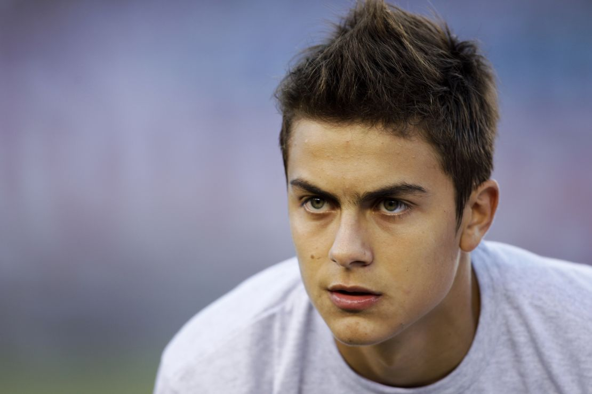
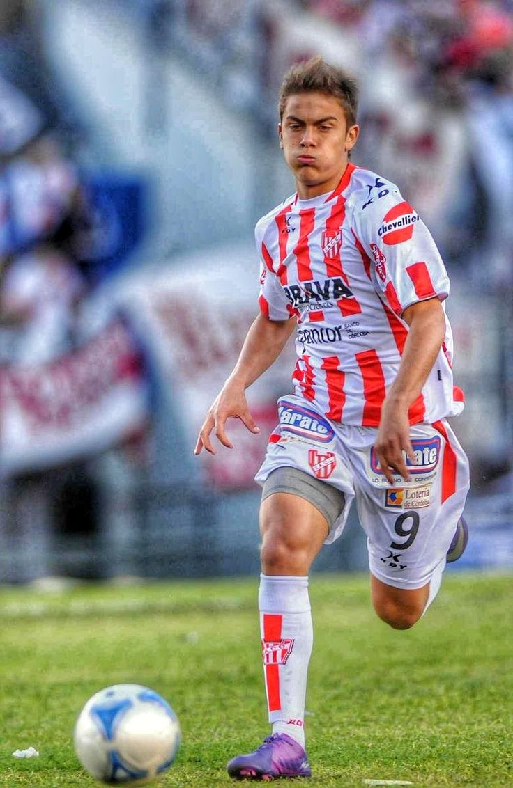
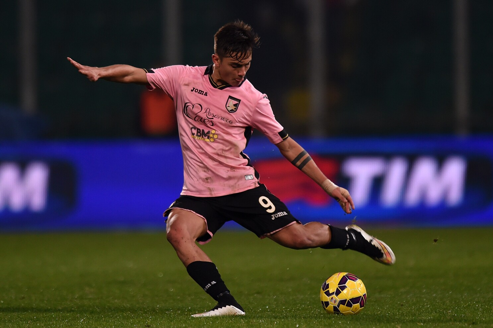
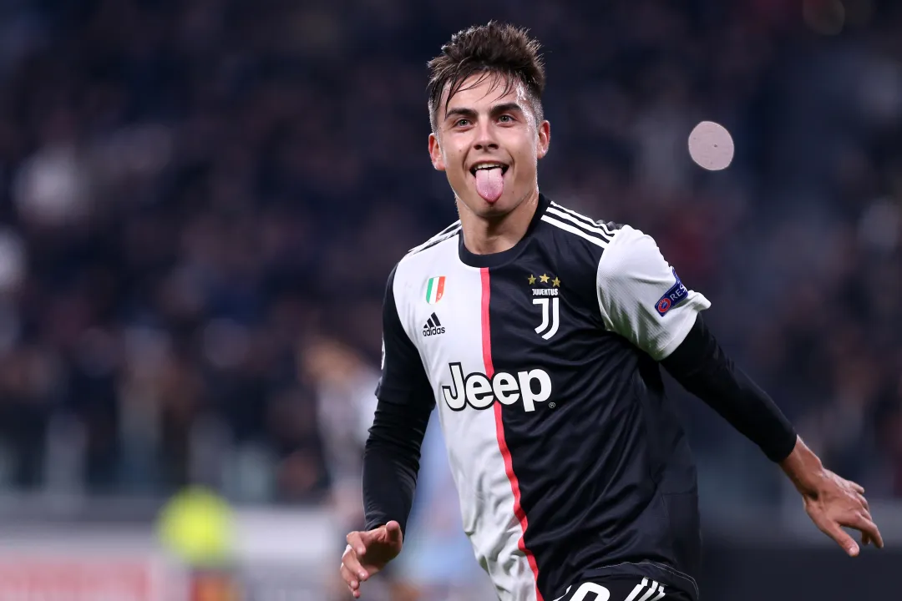
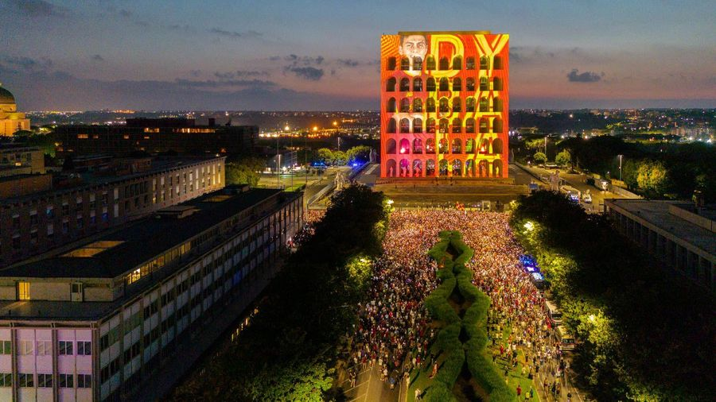
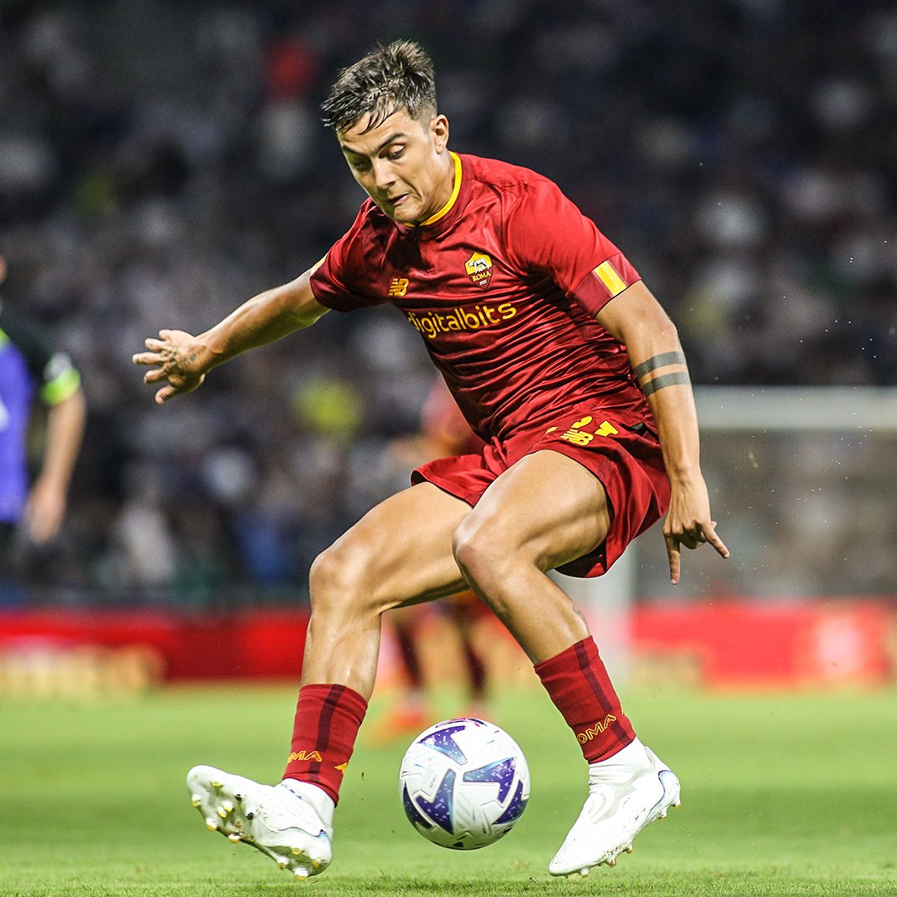
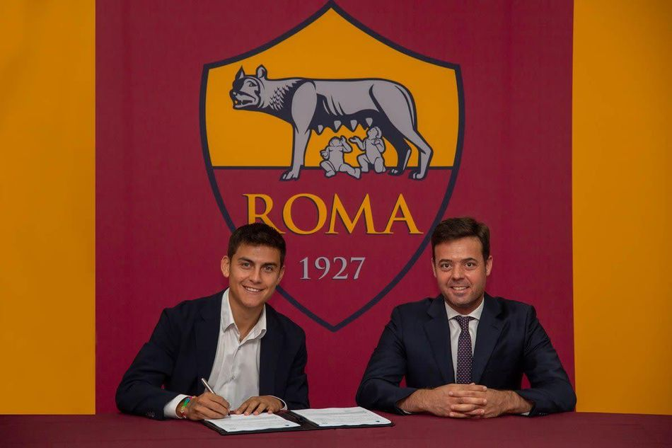

Full Name: Paulo Bruno Exequiel Dybala
Birth Date: November 15, 1993 (age 30)
Birth Place: Laguna Larga, Argentina
Height: 1.77 m (5 ft 10 in)
Position: Forward
Current Team: AS Roma
Number: 21
Paulo Bruno Exequiel Dybala was born on November 15, 1993, in Laguna
Larga, a small town in the Córdoba Province of Argentina.
From a young age, he showed a strong passion for football, playing in
local streets and fields with his family and friends.
Football was a big part of his upbringing, and his natural talent was
evident early on.
Dybala grew up in a close-knit family; his father, grandfather, and
uncle all played football at amateur levels, which inspired him to
pursue the sport seriously.
Despite coming from humble beginnings, Paulo’s dedication and hard work
set him apart.
He joined the youth academy of Instituto Atlético Central Córdoba, a
local club known for developing talented players.
Through the youth ranks, his technical skills, quick feet, and
creativity caught the attention of coaches.
At age 17, Dybala made his professional debut with Instituto in 2011 in
Argentina’s second division.
He showed great composure in front of goal, scoring 17 goals in 38
appearances during his time at the club.
His performances attracted interest from European scouts, especially for
his agility, dribbling, and ability to read the game.

Palermo (Italy) (2012–2015):
In 2012, seeking to test himself in one of Europe’s toughest leagues,
Paulo signed with Palermo in Italy’s Serie A.
His time at Palermo was marked by impressive performances, showcasing
his skills as a forward.
Dybala quickly became a fan favorite, known for his dribbling,
creativity, and ability to score goals.
During his tenure at the club, he developed into one of the most
promising young talents in Italian football.

| Season | Competition | Appearances | Goals | Assists |
|---|---|---|---|---|
| 2012–13 | Serie A | 27 | 3 | N/A |
| 2013–14 | Serie B | 28 | 5 | N/A |
| 2014–15 | Serie A | 34 | 13 | 10 (estimated) |
Juventus (Italy) (2015–2022):
In 2015, Dybala made a high-profile move to Juventus, one of Italy’s
most successful clubs.
At Juventus, he continued to develop his game, becoming a key player for
the team.
Over seven seasons with the club, he won numerous domestic titles,
including multiple Serie A championships and Coppa Italia trophies.
Dybala was known for his versatility, able to play as a second striker,
attacking midfielder, or winger.
His vision, passing ability, and knack for scoring crucial goals made
him an integral part of Juventus’ success during this period.
Over seven seasons, he won seven Serie A titles, multiple Coppa Italia
trophies, and Supercoppa Italiana trophies, establishing himself as a
world-class forward.
Despite injury setbacks at times, his creativity and moments of
brilliance, such as free kicks and solo goals left a lasting mark on the
club’s success.

| Seasons | Appearances | Goals | Assists |
|---|---|---|---|
| 2015‑16 | 44 | 23 | 10 |
| 2016‑17 | 43 | 19 | 10 |
| 2017‑18 | 47 | 26 | 12 |
| 2018‑19 | 36 | 10 | 5 |
| 2019‑20 | 45 | 16 | 8 |
| 2020‑21 | 30 | 8 | 6 |
| 2021‑22 | 33 | 14 | 7 |
AS Roma (Italy) (2022–Present):
After seven successful seasons at Juventus, Paulo Dybala joined AS Roma
on July 20, 2022, as a free agent.
Upon arriving, Dybala was given the number 21 shirt (his old number
before wearing Juventus' No.10).
He was immediately welcomed as a star in Rome, with over 10,000 fans
showing up to greet him at his official presentation at the iconic
Palazzo della Civiltà Italiana.

His arrival brought massive excitement to the club and the city. On the pitch, Dybala quickly became a key figure for Roma. His creativity, vision, and ability to score crucial goals provided the team with a much-needed attacking spark. His movement between the lines, left-footed precision, and vision gave Roma a much-needed edge in tight matches, often being the difference-maker in close results. He developed strong chemistry with players like Lorenzo Pellegrini and Romelu Lukaku (who joined on loan that season). His form was electric when fit, though once again, injuries interrupted his momentum, especially muscle and thigh issues that kept him out for weeks at a time. Despite these setbacks, Dybala's influence on the team was undeniable. Off the pitch, Dybala's charisma and professionalism made him a fan favorite. He embraced the club's culture and quickly became a leader in the dressing room. His experience from Juventus and international football brought a winning mentality to Roma, inspiring younger players. As of mid-2024, Dybala continues to be a crucial player for AS Roma, contributing both goals and assists while helping the team compete at the highest levels in Serie A and European competitions.
In January 2025, an extension clause in his contract was activated, extending his stay until June 2026. Reports suggest he earns around €8 million per year, making him one of the highest-paid players in Roma’s history.

Paulo Dybala's journey from a small town in Argentina to becoming a
global football star is a testament to his talent, hard work, and
determination.
His story continues to inspire aspiring footballers worldwide, and his
legacy in the sport is still being written as he continues to perform at
the highest levels with AS Roma.
Dybala Career History:
Disclaimer: This website does not collect any information from users. It is only for demonstration purposes.